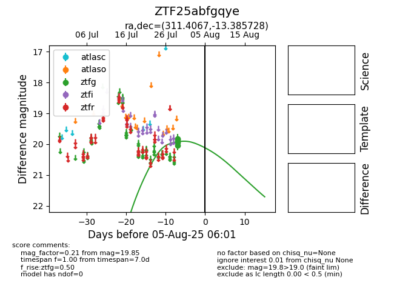

Target ZTF25abfgqye at 2025-08-05 23:02, see:
FINK: fink-portal.org/ZTF25abfgqye
Lasair: lasair-ztf.lsst.ac.uk/objects/ZTF25abfgqye
ALeRCE: alerce.online/object/ZTF25abfgqye
alt names
ZTF25abfgqye (ztf,fink)
coordinates:
equatorial (ra, dec) = (311.4067,-13.38573)
galactic (l, b) = (33.3308,-31.28652)
photometry
last ztfg=19.85
5 ztfg detections
